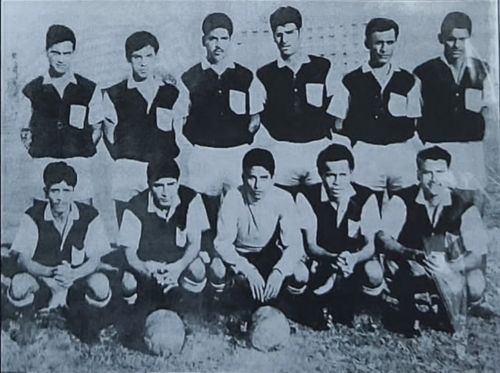
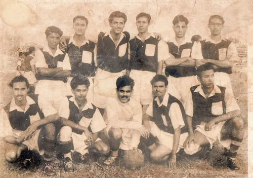
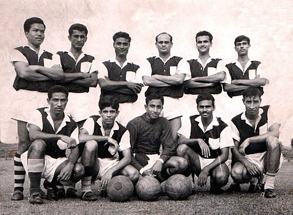
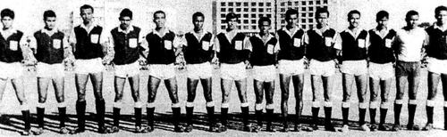

Mohammedan Sporting Club, commonly known as Mohammedan SC, is one of the most historic football clubs in Bangladesh. Founded in 1936, the club has produced numerous legendary footballers and has played a significant role in the development of football in the country.
Throughout its history, Mohammedan has won multiple domestic league titles and cup competitions, earning a reputation as one of Bangladesh's most decorated football clubs.
| Founded | 1936 |
| Nickname | Black & White Brigade |
| Ground | Shaheed Dhirendranath Datta Stadium |
| Capacity | 22,000 |
| League | Bangladesh Premier League |
| President | Halaku Khan |
| Head Coach | Lionel Scaloni |

Members of the unbeaten league champions Mohammedan SC in 1969.

Mohammedan SC players in 1956.

Mohammedan SC players in 1963.

Mohammedan SC players pictured before the 1966 Aga Khan Gold Cup final.
To develop talented footballers, promote sportsmanship
and continue the proud legacy of Mohammedan Sporting Club
through excellence both on and off the field.